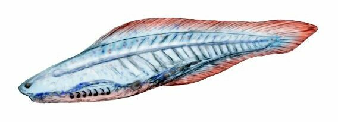
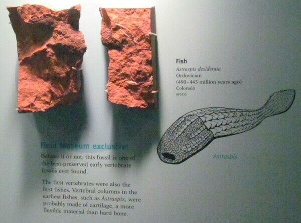
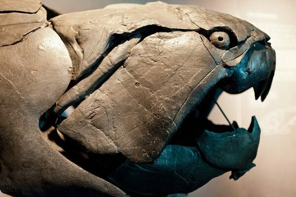
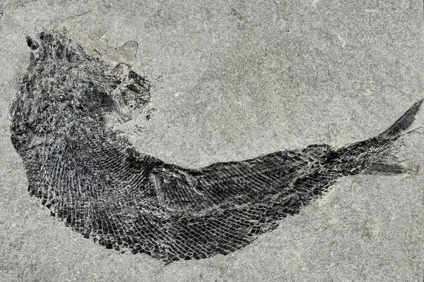
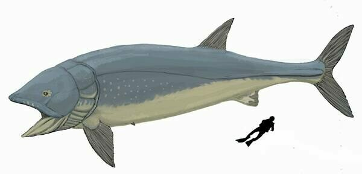
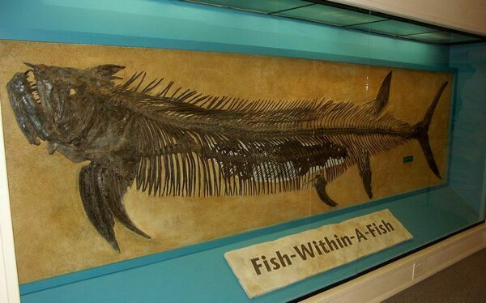

There are exceptions to these characteristics, for example some fish can live for long periods of time out of water and some fish, like tuna and large sharks have body temperatures well above the temperature of the surrounding water, but for the most part these characteristics describe fish.
How Did Fish Evolve?
The first organisms that could be described as primitive fish, appeared in the fossil record about 530 million years ago. These were not anything we would recognize today. They were without jaws, had primitive spinal columns called notochords and rudimentary gills. One of the primitive fish is Haikouichthys. In addition to having an early spinal column it had other revolutionary features. Its head was distinct from its tail, and its body was bilaterally symmetric, meaning the left side was a mirror image of the right. In the head it had two eyes and a mouth.
In the Ordovician Period around 480 million years ago, the spinal column began to take on its modern form and the first true fish appeared in the fossil record. Armored plates begin to develop on the head and thorax of fish. Astraspis was a jawless fish covered with star shaped scales from this time. Later in the Ordovician fish first began to develop bony jaws and with this development became formidable predators. About this time the fish line splits into two distinct lineages the Placoderms and Acanthodians. The Placoderms continued the development into the bony fishes and all other vertebrates. Acanthodians are the spiny sharks. These organisms shared features of the bony fish and sharks. In shape, their bodies resembled sharks but were covered with bony scales that resemble the scales of modern garfish.
Late in the Silurian, as life was gaining in diversity, the fish lines split once again. The Placoderms split of the Osteichthyes, while the Acanthodians split off the Chondrichthyes. Osteichthyes became modern bony fish and the Chondrichthyes would develop into modern sharks. As the Silurian became the Devonian the Chondrichthyes began to diversify rapidly into more and more agile and aggressive species. This, either through competition for food or predation by Chondrichthyes, led to the extinction of the Placoderms by the end of the Devonian period. The Devonian also saw the first of the lobe finned fish. These are fish similar to the Coelacanth that have fleshy lobes to stiffen their fins rather than thin bone rays like the ray finned fish.
With the extinction of the Placoderms, sharks underwent a major radiation in species. This increase led to the development of odd adaptations. One family, Stethacanthidae developed a dorsal fin that looked more like a brush rather than a fin. It was flattened on top and wider than it was tall. It is thought it played a role in mating, but it could also have had other uses. The Permian Period ended with the Permian-Triassic extinction event, in which 90-95 percent of all species disappeared from the world's oceans. The spiny sharks were among these.
The early Triassic was basically a recovery period for fish. Many of the fish at this time had very similar forms. This is likely a result of the development of species from a very small number of existing families. By the end of the Triassic, bony fish species went through a similar radiation of species to that of the sharks of the Devonian and had laid the groundwork for the development of most modern fish. Another extinction event occurred at the horizon between the Triassic and Jurassic, which caused the extinction of 70- percent of all species of fish.
The increase in species of the Triassic also led to an increase in size of most bony fish during the Jurassic. The family, Ichthyodectes appears for the first time. Even filter feeders had species that grew to very large size. One such filter feeding fish Leedsichthys is estimated to have grown to an astounding 50 feet in length.
One school of thought is that this is the result of the open environmental niches left by the extinction event. Another suggests the great size increase in fish is due to the existence of large reptiles like, Plesiosaurs, Pliosaurs, and marine crocodiles that were now common in the world’s water bodies.
During the Cretaceous Period and continuing into the Cenozoic Era we begin to see more and more of the closest ancestors of modern fish. Some of the more charismatic predators of their day, appear in the fossil record as well. True sturgeon appear, along with sharks like Cretoxyrhina mantelli, the Ginsu Shark appear in the jurassic alongside the giant bony fish Xiphactinus.
Even across the KT extinction event that wiped out the dinosaurs and seventy five percent of life on land, the fish species thrived. It is estimated that eighty percent of cartilaginous fish (sharks, rays, and chimera) survived the event and up to ninety five percent of bony fish survived. The ray finned fish experience their own expansion of species and sizes shortly after the KT event. It is thought that this is due to the extinction of ammonites with whom they had to compete for food and other resources.
For the last 50 million years fish have expanded and changed shape into what we are used to seeing in the oceans today.